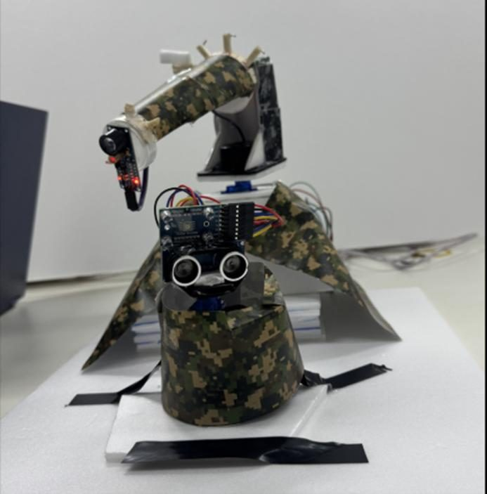
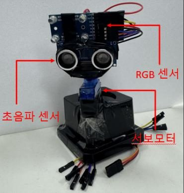
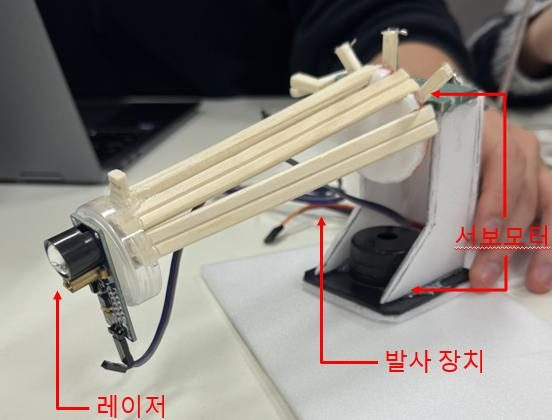
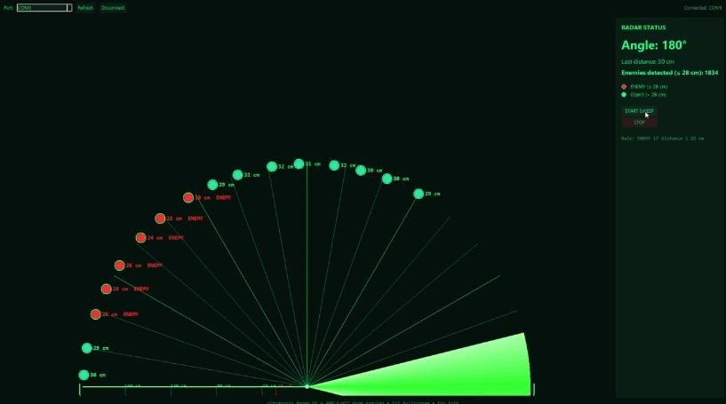
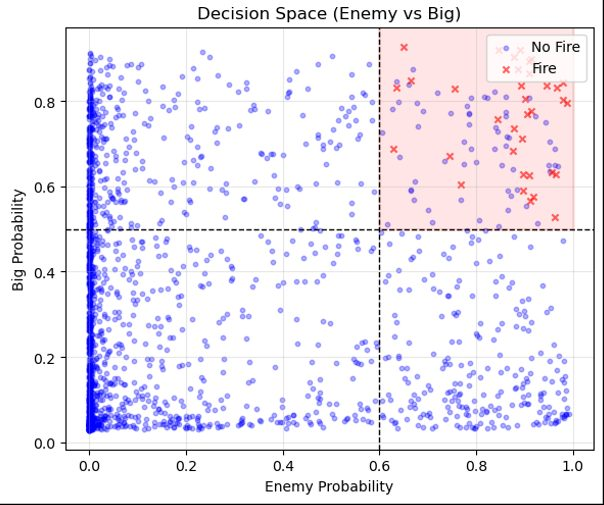

임베디드시스템설계#Arduino#I2C#Timer PWM#TinyMLP
AI 지상 감시·정밀 타격 시스템
임베디드시스템설계 Project 1 · 10조
- 무엇
- 서보로 0~180°를 훑으며 거리와 색상을 재고, 보드 위 AI가 적군이면서 큰 표적인지 판단해 자동으로 쏩니다.
- 구성
- Arduino 두 대를 I2C로 연결했습니다. Master는 센싱, Slave는 TinyMLP 추론과 발사 제어를 맡습니다. 상황은 PC GUI에 표시합니다.
- 핵심
- 오발을 막는 판정 로직입니다. 범위 밖이면 무조건 금지하고, 조건이 3회 연속 맞아야 쏘고, 쏜 뒤 600ms는 다시 쏘지 않습니다.




시스템 구조
핵심 구현
- 입력 5개(색상, 거리, 각도, 이전 거리, 각도 변화)로 적군 확률과 대형 표적 확률을 출력
- 시뮬레이션 데이터 10만 개로 학습한 뒤 소량의 실측 데이터로 파인튜닝하고, 가중치를 헤더 파일로 뽑아 보드에 넣음
- Sigmoid를 나눗셈 근사식으로 바꿔 MCU 연산 부담을 줄임
- 거리 20~200cm, 각도 30~150° 밖이면 발사 금지
수치
- 학습 데이터
- 100,000개 (학습 9만, 검증 1만)
- 가중치 갱신
- 61,600회 (배치 512, 350 에폭)
- 발사 조건
- 적 확률 0.6 이상, 대형 확률 0.5 초과, 약 28cm 이내
- 오발 방지
- 3회 연속 충족, 600ms 쿨다운

링크
- 시연 영상Google Drive